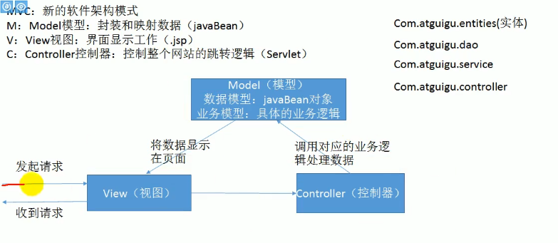
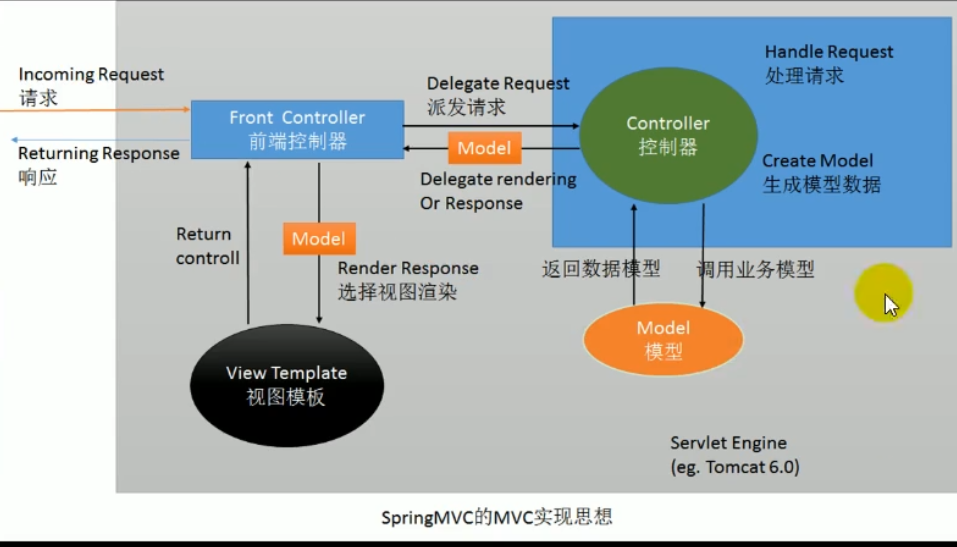
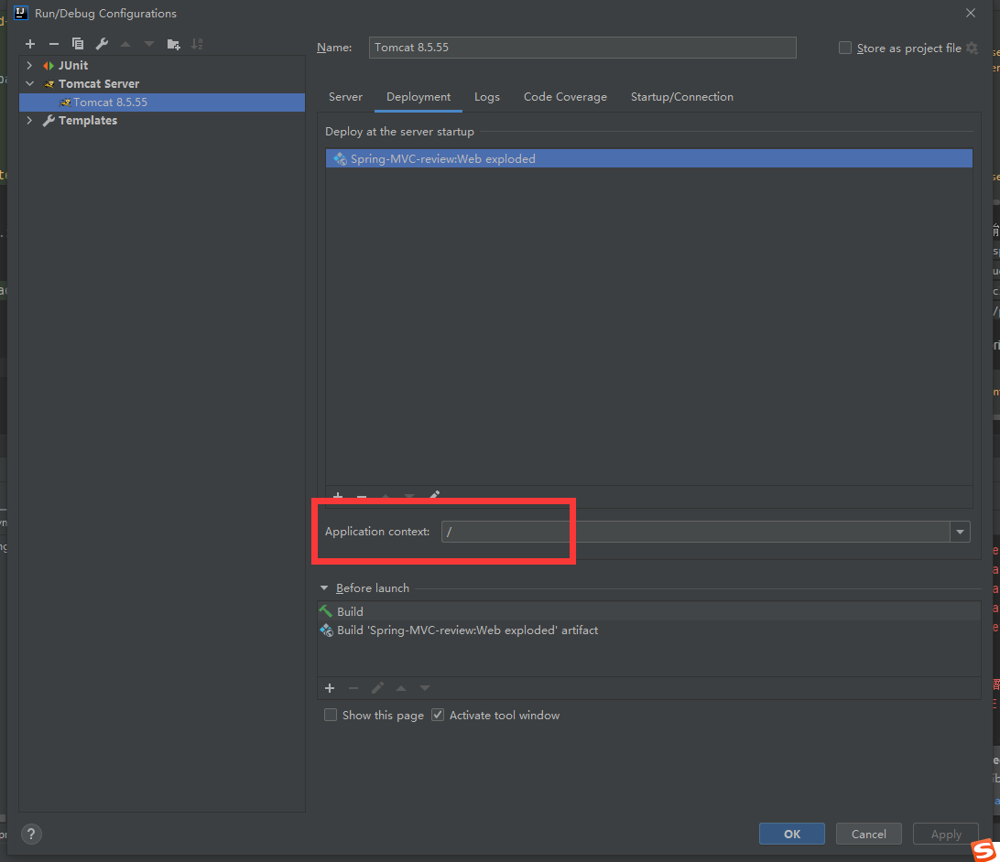
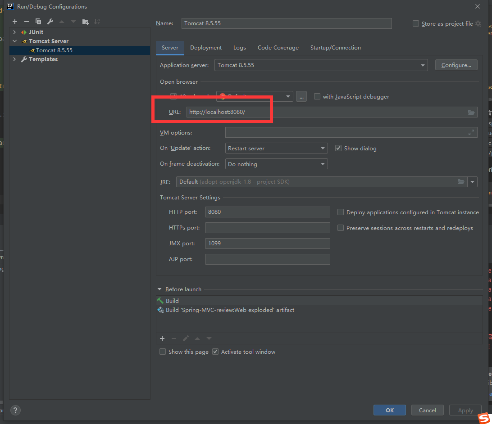
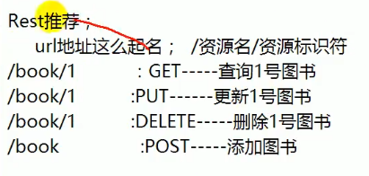
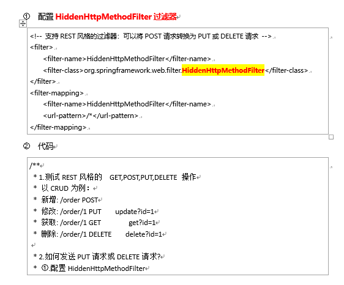
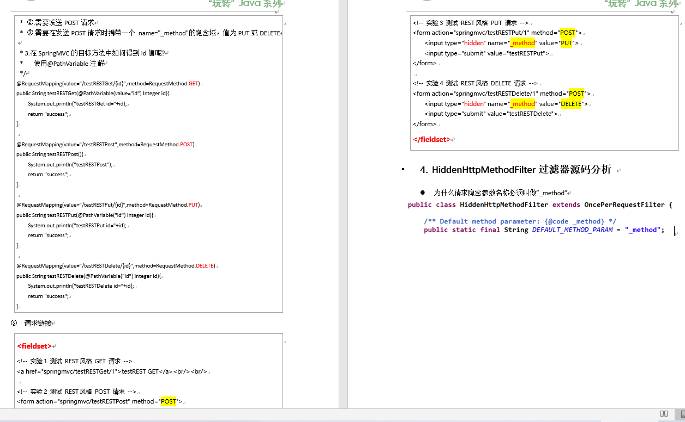
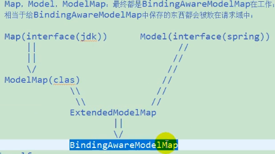
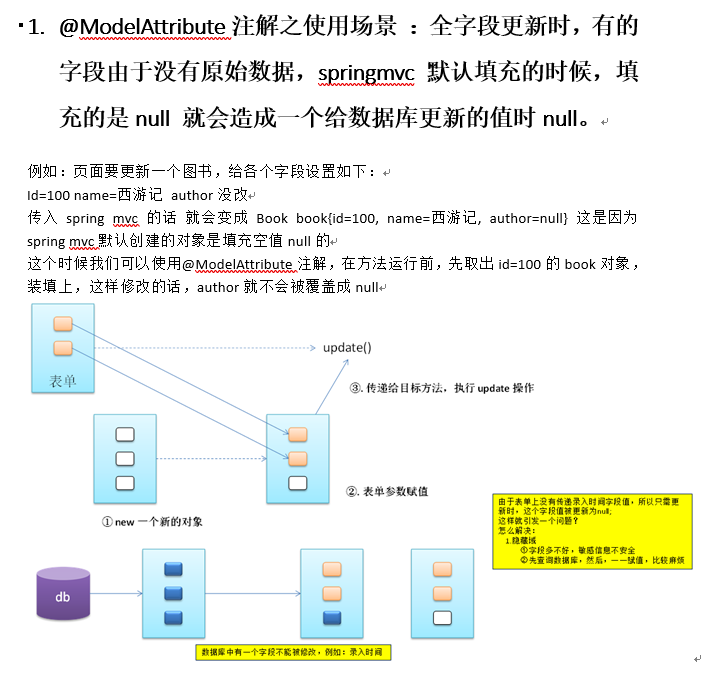
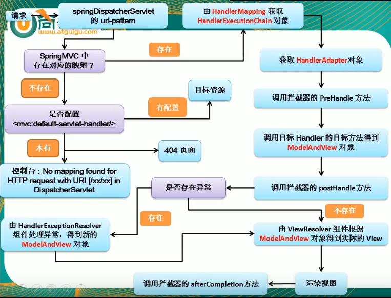

Spring MVC复习
spring MVC===spring 的 web模块。用来实现前后端交互
MVC概述

- View：就是一些JSP，jsp就是一个页面，负责展示数据
- Controller：控制器处理请求
- Model：模型 数据模型就是bean 实体； 业务模型就是业务逻辑
分层就是为了解耦，解耦是为了维护方便，分工方便
Spring MVC强大的原因：有一套非常强大的注解，让POJO（普通的java对象，plain old java object）
处理请求
Spring MVC 用了松散耦合组件结构
SpringMVC眼中的MVC

原来是MVC 是直接由控制器收到，现在是由前端控制器（Front Controller）接受。
前端控制器看谁能处理请求，然后派发请求。
前端控制器有点像到医院的智能导诊台
导包
spring-aop-4.0.0.RELEASE.jar
spring-beans-4.0.0.RELEASE.jar
spring-context-4.0.0.RELEASE.jar
spring-core-4.0.0.RELEASE.jar
spring-expression-4.0.0.RELEASE.jar
commons-logging-1.1.3.jar
spring-web-4.0.0.RELEASE.jar
spring-webmvc-4.0.0.RELEASE.jar
配置spring mvc过程中的一些坑
导包时候提示class not found
需要把包导入到/web/WEB-INF/lib/目录下，而不是原始的/lib/目录下（非web项目时就放在这），并添加到project structure装配过程中 IDEA没办法自己写配置，需要自己把下面的配置弄到web.xml里
1
2
3
4
5
6
7
8
9
10
11
12
13
14
15
16
17
18
19
20<!--这段代码 IDEA编译器不能自动生成，必须手敲到web.xml中-->
<servlet>
<servlet-name>springDispatcherServlet</servlet-name>
<servlet-class>org.springframework.web.servlet.DispatcherServlet</servlet-class>
<init-param>
<!--指定spring MVC配置文件位置-->
<param-name>contextConfigLocation</param-name>
<param-value>classpath:springmvc.xml</param-value>
</init-param>
<!--启动加载，在服务器启动的时候创建 值越小优先级越高-->
<load-on-startup>1</load-on-startup>
</servlet>
<servlet-mapping>
<servlet-name>springDispatcherServlet</servlet-name>
<!--
/*和/都是拦截所有请求
/*会拦截.jsp的请求
-->
<url-pattern>/</url-pattern>
</servlet-mapping>这里不能写
<param-value>springmvc.xml</param-value>应该写<param-value>classpath:springmvc.xml</param-value>spring mvc.xml的配置
1
<context:component-scan base-package="com.runsstudio.springmvc_review.*"/>
基本上就是一个包扫描
tomcat的配置-点项目 然后添加


另外，
index.jsp要放在web文件夹的根目录下，而不是放在/WEB-INF/html或者jsp文件夹下。
- helloController
其实就是一个普通的类 不需要什么操作 只要告诉spring这个是一个controller 他就是一个controller
** Dispatch Servlet **这个就是前端控制器的代码，设置来拦截所有请求
- 如果不指定启动文件位置 怎么办？如果不指定，默认会找
1
2
3<!--指定spring MVC配置文件位置-->
<param-name>contextConfigLocation</param-name>
<param-value>classpath:springmvc.xml</param-value>/WEB-INF/xxx-servlet.xml这里xxx是servlet-name，对于本项目也就是springDispatcherServlet-servlet.xml前缀后缀解析器的配置
在controller里面 如果不配置视图解析器，则原先需要写1
2
3
4
5
6
7
8/*处理当前项目下的/hello请求，这里写hello也可以 但还是习惯加上*/
public String helloServlet(){/*这里的函数名不需要特别指定 但是返回类型是string*/
System.out.println("请求收到了，正在处理中");
/*原先写法*/
//return "/WEB-INF/jsp/success.jsp";
/*添加前缀后缀解析器之后写法*/
return "success";
}/WEB-INF/jsp/success.jsp这样有些麻烦，我们可以在springmvc.xml里面配置前后缀页面解析器这样就直接写1
2
3
4<bean class="org.springframework.web.servlet.view.InternalResourceViewResolver">
<property name="prefix" value="/WEB-INF/jsp/"/>
<property name="suffix" value=".jsp"/>
</bean>return "success";就可以了
HTTP常见请求
GET POST HEAD PUT DELETE OPTIONS PATCH
如果规定了请求方式 然后又请求错误的方式 会返回405
ant风格字符替代
用在requestMapping上
- ?能替代一个字符
- *能替代多个字符和一层路径
- **能替代多个路径
一些简单的操作
1 | /* |
REST风格
使用GET/PUT/POST请求区分查询 GET 是查询 PUT 是更新 POST是新增 delete是删除

问题：从页面上只能发起GET和POST请求，不能发起另外两种请求
需要拐弯抹角的发


spring mvc post请求的乱码问题及解决方案
post请求到POJO对象时，如果传递中文参数，会出现乱码问题，例如：Book{bookName='è??é??', bookPrice=123.0, bookAuthor='???é??'}
这个时候可以添加一个过滤器 来解决乱码问题
1 | <!--spring MVC 从jsp页面POST传递到Controller会出现中文乱码，此时配置这个来解决中文乱码--> |
把这个filter配置在web.xml里面，并且放在其他过滤器前面 就可以解决中文乱码问题a book:Book{bookName='null', bookPrice=22.0, bookAuthor='彩龙'}
顺便一说，spring mvc 自动装配POJO 是根据name
1 | <form action="book" method="post"> |
比如这个bookNam和book类里面的bookName属性对应不上的话 会装配null
原生api
1 | /*往session、request里面传参数，对应jsp页面里，用 |
需要导入servlet-api.jar包！
MVC里面 model、ModelMap、Map的关系：
使用MVC给页面传入数据的时候可以使用Map、Model、ModelMap，先看代码：
1 | /** |
输出Map、Model的类型，控制台都会打印class org.springframework.validation.support.BindingAwareModelMap，实际上这三个最后都是变成这个类

这也是为什么MVC给jsp页面的请求，都被放在request域里面的原因
@ModelAttribute注解 使用场景

使用方法
在方法定义上使用 @ModelAttribute 注解：Spring MVC 在调用目标处理方法前，会先逐个调用在方法级上标注了 @ModelAttribute 的方法。
在方法的入参前使用 @ModelAttribute 注解：可以从隐含对象中获取隐含的模型数据中获取对象，再将请求参数绑定到对象中，再传入入参
将方法入参对象添加到模型中
,具体解决参考：
ModelAttributeTestController
1 | /** |
- SpringMVC 确定目标方法 POJO 类型入参的过程
① 确定一个 key:
1). 若目标方法的 POJO 类型的参数木有使用 @ModelAttribute 作为修饰, 则 key 为 POJO 类名第一个字母的小写
2). 若使用了@ModelAttribute 来修饰, 则 key 为 @ModelAttribute 注解的 value 属性值.
② 在 implicitModel 中查找 key 对应的对象, 若存在, 则作为入参传入
1). 若在 @ModelAttribute 标记的方法中在 Map 中保存过, 且 key 和 ① 确定的 key 一致, 则会获取到.
③ 若 implicitModel 中不存在 key 对应的对象, 则检查当前的 Handler 是否使用 @SessionAttributes 注解修饰,
④ 若使用了该注解, 且 @SessionAttributes 注解的 value 属性值中包含了 key, 则会从 HttpSession 中来获取 key 所对应的 value 值, 若存在则直接传入到目标方法的入参中. 若不存在则将抛出异常.
⑤ 若 Handler 没有标识 @SessionAttributes 注解或 @SessionAttributes 注解的 value 值中不包含 key, 则会通过反射来创建 POJO 类型的参数, 传入为目标方法的参数
⑥ SpringMVC 会把 key 和 POJO 类型的对象保存到 implicitModel 中, 进而会保存到 request 中.
简单来说就是先找隐含模型 再找实际的模型
页面转发
1 | /** |
有前缀（forward、redirect）的和视图解析器就没啥关系了，必须加上.jsp，视图解析器不会进行拼串
异常处理
1 | /** |
参考 src/com/runsstudio/springmvc_review/controller/ExceptionTestController.java
需要注意的1点：
1 | public String exceptionHandler(Exception e, ModelMap modelMap){ |
这个写法是不行的，会报错
1 | java.lang.IllegalStateException: Unsupported argument [org.springframework.ui.ModelMap] for @ExceptionHandler method: public java.lang.String com.runsstudio.springmvc_review.controller.ExceptionTestController.exceptionHandler(java.lang.Exception,org.springframework.ui.ModelMap) |
如果有多个ExceptionHandler可以处理异常，那么精确的优先
如果想写一个全局处理异常的类，用@ControllerAdvice注解标注在类上
Spring工作流程描述
1) 用户向服务器发送请求，请求被SpringMVC 前端控制器 DispatcherServlet捕获；
2) DispatcherServlet对请求URL进行解析，得到请求资源标识符（URI）:
判断请求URI对应的映射
① 不存在：
a) 再判断是否配置了mvc:default-servlet-handler：
b) 如果没配置，则控制台报映射查找不到，客户端展示404错误
c) 如果有配置，则执行目标资源（一般为静态资源，如：JSP,HTML）
② 存在：
a) 执行下面流程
3) 根据该URI，调用HandlerMapping获得该Handler配置的所有相关的对象（包括Handler对象以及Handler对象对应的拦截器），最后以HandlerExecutionChain对象的形式返回；
4) DispatcherServlet 根据获得的Handler，选择一个合适的HandlerAdapter。
5) 如果成功获得HandlerAdapter后，此时将开始执行拦截器的preHandler(…)方法【正向】
6) 提取Request中的模型数据，填充Handler入参，开始执行Handler（Controller)方法，处理请求。在填充Handler的入参过程中，根据你的配置，Spring将帮你做一些额外的工作：
① HttpMessageConveter： 将请求消息（如Json、xml等数据）转换成一个对象，将对象转换为指定的响应信息
② 数据转换：对请求消息进行数据转换。如String转换成Integer、Double等
③ 数据根式化：对请求消息进行数据格式化。 如将字符串转换成格式化数字或格式化日期等
④ 数据验证： 验证数据的有效性（长度、格式等），验证结果存储到BindingResult或Error中
7) Handler执行完成后，向DispatcherServlet 返回一个ModelAndView对象；
8) 此时将开始执行拦截器的postHandle(…)方法【逆向】
9) 根据返回的ModelAndView（此时会判断是否存在异常：如果存在异常，则执行HandlerExceptionResolver进行异常处理）选择一个适合的ViewResolver（必须是已经注册到Spring容器中的ViewResolver)返回给DispatcherServlet，根据Model和View，来渲染视图
在返回给客户端时需要执行拦截器的AfterCompletion方法【逆向】
将渲染结果返回给客户端

spring 和spring mvc整合
- spring和spring mvc 整合的目的：分工明确
- 有和控制器相关的放在spring mvc 的配置里面
- 有和业务逻辑相关的放在spring配置里面
怎么整合？只让spring mvc扫描 Controller
只让spring 扫描非Controller就可以了
具体来说，就是三步走：
第一步：在web.xml中配置监听器，配置在最前面
1 | <!-- 配置启动 Spring IOC 容器的 Listener --> |
第二步：
设置Spring 的容器扫描，让他扫描非controller
1 | <context:component-scan base-package="com.atguigu.springmvc"> |
(这里参考conf/springCombinedWithSpringMVC.xml)
第三步，配置spring mvc容器扫描，让他只扫描controller
1 |
|
然后照常使用@Autowired注入参考src/com/runsstudio/springmvc_review/controller/BookController.java
1 |
|
** SpringMVC 的 IOC 容器中的 bean 可以来引用 Spring IOC 容器中的 bean. **
反过来呢 ? 反之则不行. Spring IOC 容器中的 bean 却不能来引用 SpringMVC IOC 容器中的 bean
- 在 Spring MVC 配置文件中引用业务层的 Bean
- 多个 Spring IOC 容器之间可以设置为父子关系，以实现良好的解耦。
- Spring MVC WEB 层容器可作为 “业务层” Spring 容器的子容器：
即 WEB 层容器（含controller）可以引用业务层（service、dao）容器的 Bean，而业务层容器却访问不到 WEB 层容器的 Bean